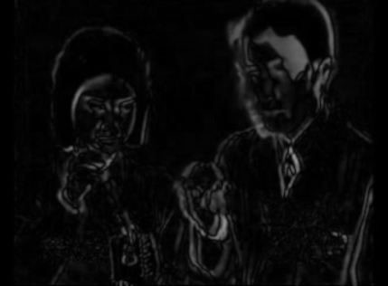
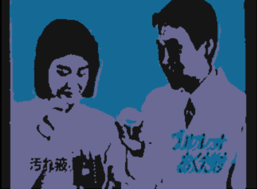
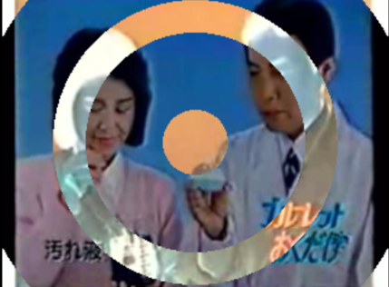

After several years of not playing any/much VJ-Giggs i recently re-started to do some and went with Resolume 2.41,
which i very much loved back in the days. I tried to find all the effects i used but started to miss some, so I built these
FreeFrame 1.0
effects for Resolume 2.41 (Download) together with
Claude.
Cross-compiled to 32-bit Windows DLLs from Linux using MinGW.
Instructions: Just drop the .dll into your Resolume 2.41 FreeFrame folder
and you're good: C:\Programs (x86)\Resolume2.41\Addons.

Subtracts a delayed copy of the frame from the current frame, then doubles the difference and clamps it. Motion lights up; still areas go dark. One slider controls the delay (1–30 frames).

Finds the N most dominant colours in the frame and remaps every pixel to its nearest one — a posterisation that stays true to the actual palette of the image. One slider controls how many colours survive (2–64).

Draws concentric rings centred in the frame. Pixels that fall inside a ring are colour-inverted; pixels in the gaps between rings are left untouched. Three sliders let you dial in the count, width and spacing of the rings.